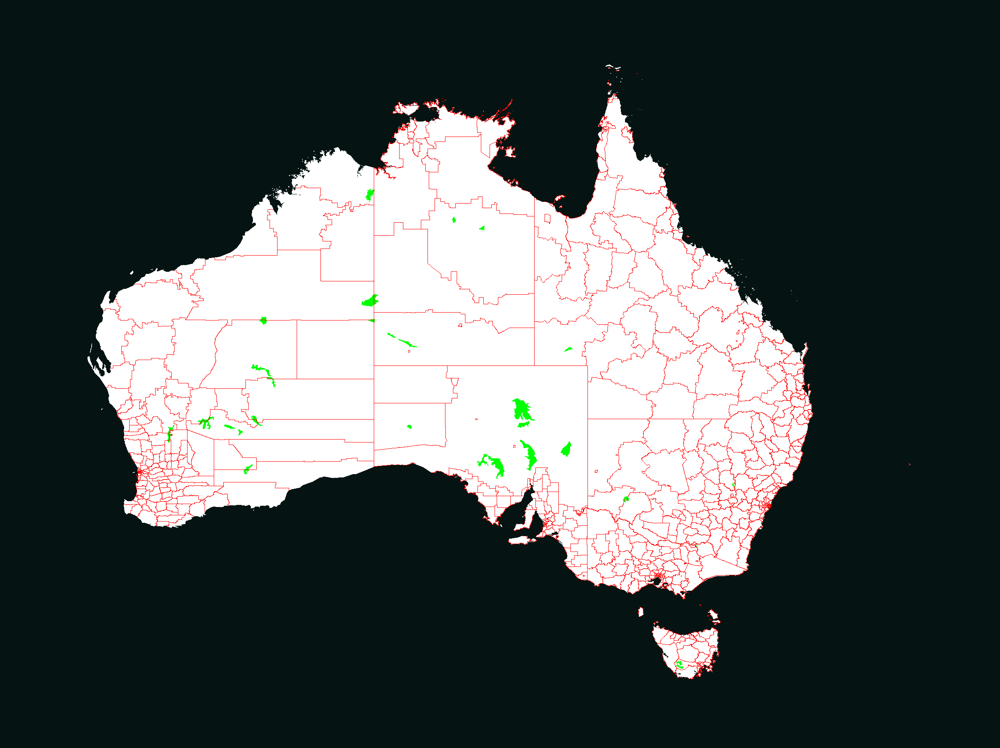
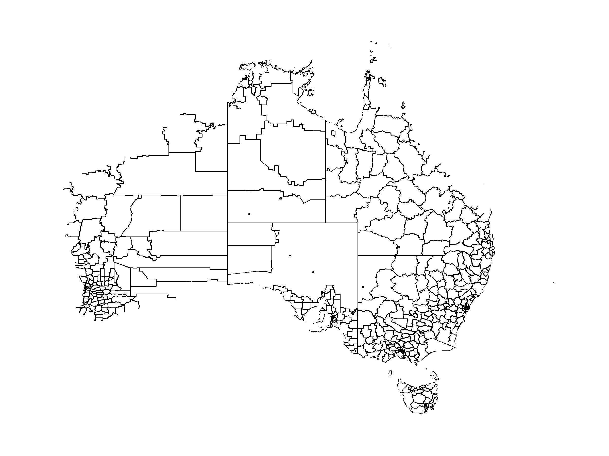
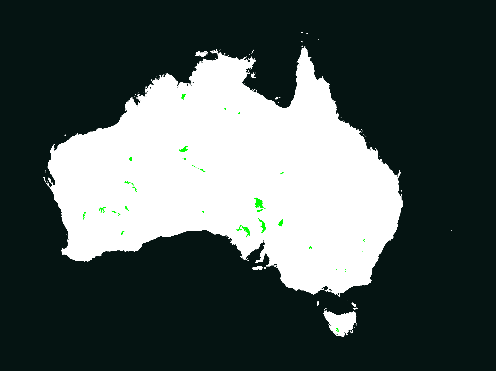

OpenGS Map Tool
Generate province and territory maps for grand strategy games from real-world boundary data
Generate province and territory maps for grand strategy games from real-world boundary data
# System dependencies
sudo apt install python3-pyqt6 python3-numpy python3-pillow \
python3-scipy python3-tk python3-venv gdal-bin
# Clone and setup
git clone https://github.com/cpntodd/opengs-maptool.git
cd opengs-maptool
python3 -m venv --system-site-packages .venv
.venv/bin/pip install tkinterdnd2 cartopy
# Run
.venv/bin/python3 main.pyDownload the latest release from GitHub Releases, unpack, and run the executable.
git clone https://github.com/cpntodd/opengs-maptool.git
cd opengs-maptool
pip install -r requirements.txt
pip install cartopy
python main.pyLoad real-world administrative boundaries from GeoJSON or MapInfo TAB files. Auto-generate land/sea raster images from Natural Earth coastline data. Supports multi-file loading with automatic clipping to land.
Generate territory maps from land and boundary images. Control land and ocean territory counts independently with density sliders.
Subdivide territories into provinces using Voronoi tessellation with Lloyd relaxation for natural-looking regions.
Import density images to control province/territory distribution. Darker areas attract more seeds for denser regions.
Optional natural-looking irregular borders using spatially-correlated noise instead of straight Voronoi edges.
Import a terrain image to assign terrain types (forest, desert, mountain, etc.) to provinces based on their center-point location.
Lakes are automatically detected and become individual provinces, assigned to the overlapping territory.
Export territory and province maps as PNG images, plus JSON definitions with IDs, RGB colors, types, coordinates, and terrain data.



The quickest way to create a map from real-world data:
.tab or .geojson filesGovernment open-data portals worldwide publish administrative boundaries as free downloads:
| Country | Portal | Formats |
|---|---|---|
| USA | census.gov | SHP, GeoJSON |
| UK | ONS Open Geography | SHP, GeoJSON, KML |
| Canada | Statistics Canada | SHP, GeoJSON, TAB |
| Australia | data.gov.au | SHP, TAB, GeoJSON |
| New Zealand | Stats NZ | SHP, GeoJSON |
| EU (all members) | Eurostat GISCO | SHP, GeoJSON |
| Germany | BKG | SHP |
| France | data.gouv.fr | SHP, GeoJSON |
| Japan | NLNI | SHP |
| Brazil | IBGE | SHP |
| Global | GADM | GeoJSON, SHP, KMZ |
| Global | Natural Earth | SHP |